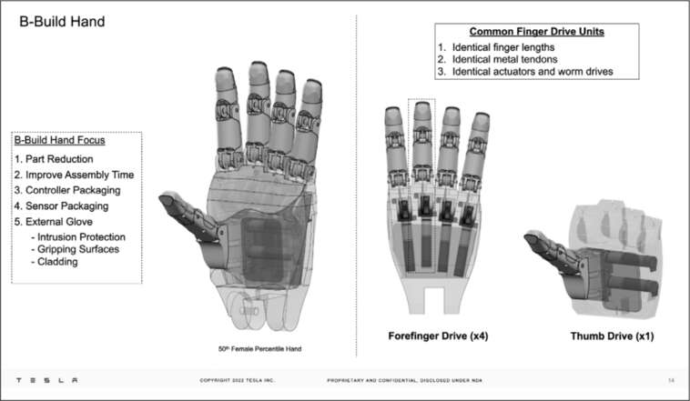
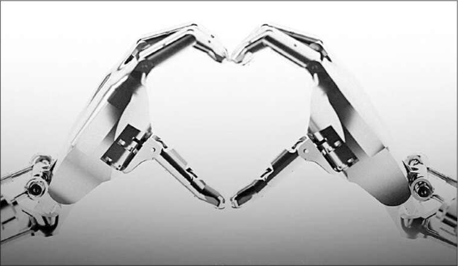

Chạm đến con người
Khi Musk công bố kế hoạch chế tạo Optimus vào tháng 8 năm 2021, một nữ diễn viên mặc bộ đồ bó màu trắng loạng choạng trên sân khấu, bắt chước một con robot. Vài ngày sau, giám đốc thiết kế của Tesla, Franz von Holzhausen, đã triệu tập một nhóm để bắt đầu chế tạo thứ thật sự: một robot có thể mô phỏng con người.
Musk đưa ra một chỉ thị: đó phải là một robot hình người. Nói cách khác, nó phải trông giống một người hơn là một thiết bị cơ khí có bánh xe hoặc bốn chân như những gì Boston Dynamics và các công ty khác đang làm. Hầu hết không gian làm việc và công cụ được thiết kế để phù hợp với cách con người làm việc, vì vậy Musk tin rằng một robot nên gần giống với hình dạng con người để hoạt động một cách tự nhiên. "Chúng tôi muốn làm cho nó giống người nhất có thể", von Holzhausen nói với mười kỹ sư và nhà thiết kế đang ngồi quanh bàn họp. "Nhưng chúng tôi cũng có thể bổ sung những cải tiến cho những gì con người có thể làm."
Họ bắt đầu với bàn tay. Von Holzhausen cầm một chiếc máy khoan điện, và họ nghiên cứu cách các ngón tay và gót bàn tay tương tác với nó. Ban đầu, việc xem xét chế tạo một bàn tay có bốn ngón dường như hợp lý, vì ngón út dường như không cần thiết. Nhưng ngoài việc trông kỳ quái, điều đó hóa ra lại không thực sự hữu dụng. Thay vào đó, họ quyết định kéo dài ngón út để nó hữu ích hơn. Nhưng họ cũng đã đơn giản hóa một điều: họ có thể làm cho mỗi ngón tay có hai khớp, không phải ba.
Một cải tiến khác là làm cho phần dưới của lòng bàn tay dài hơn để nó có thể ôm trọn một dụng cụ điện, giảm bớt tải trọng cho ngón cái. Điều đó sẽ làm cho bàn tay của Optimus mạnh hơn bàn tay của con người. Họ cũng xem xét các chiến thuật sinh học tiên tiến hơn, chẳng hạn như đặt nam châm mạnh ở đầu mỗi ngón tay. Ý tưởng đó đã bị bác bỏ; quá nhiều thiết bị có thể bị hỏng bởi nam châm.
Có lẽ các ngón tay có thể vẫy ra xa lòng bàn tay, không chỉ hướng về phía nó? Có lẽ cổ tay nên có thể gập ra sau xa hơn, cũng như gập về phía trước? Mọi người trên bàn bắt đầu vẫy tay và cổ tay để xem điều đó có ý nghĩa gì. "Điều đó sẽ hữu ích nếu robot cần đẩy vào tường", von Holzhausen nói. "Nó có thể làm điều đó mà không cần tạo áp lực lên các ngón tay." Ai đó đề xuất rằng bàn tay có thể được làm để gập ra sau đến mức các ngón tay chạm vào cánh tay. Điều đó sẽ cho phép cánh tay tạo áp lực lên một vật gì đó mà không cần bàn tay tham gia. "Ồ", von Holzhausen nói, "nhưng mọi người sẽ hơi sợ hãi. Đừng làm vậy."
Gần cuối buổi họp kéo dài hai tiếng, von Holzhausen nói: “Giờ mới đến phần khó khăn đây. Làm sao để con robot này trông bắt mắt?”. Ông phân công nhiệm vụ cho từng người để chuẩn bị cho buổi họp đánh giá hàng tuần với Musk. “Hãy bắt đầu bằng việc hình dung xem các ngón tay sẽ trông như thế nào và thon dần ra sao, đặc biệt là khi chúng ta sẽ kéo dài ngón út. Elon muốn các ngón tay thon gọn theo kiểu nữ tính.”
Người máy Frankenstein
Musk và các kỹ sư của ông phát hiện ra rằng cơ thể con người thật kỳ diệu. Ví dụ, tại một trong những cuộc họp hàng tuần, họ đã thảo luận về việc các ngón tay của chúng ta không chỉ tác dụng lực lên đồ vật mà còn có thể cảm nhận được áp lực. Làm thế nào để ngón tay của Optimus có thể đánh giá áp lực tốt nhất? Một kỹ sư đề xuất: “Chúng ta có thể xem xét dòng điện trong bộ truyền động của khớp ngón tay, điều này sẽ tương quan với áp lực tác dụng lên đầu ngón tay”. Một người khác nghĩ đến việc đặt tụ điện vào đầu ngón tay, giống như trong màn hình cảm ứng, hoặc có thể là cảm biến áp suất khí quyển, chip được nhúng trong cao su, hoặc thậm chí là một camera nhỏ bên trong đầu ngón tay bằng gel. Von Holzhausen hỏi: “Sự khác biệt về chi phí là gì?”. Họ quyết định rằng việc đo áp lực bằng dòng điện trong bộ truyền động của khớp sẽ hiệu quả nhất vì nó không cần thêm bộ phận.
Dù lịch trình bận rộn đến đâu, Musk vẫn cố gắng tham gia các buổi thiết kế Optimus hàng tuần. Vào tháng 2, trong một buổi họp như vậy, ông đang ở phòng VIP tại sân vận động Miami Marlins tham dự buổi nghe album mới Donda 2 do Kanye West, hay còn gọi là Ye, tổ chức. Ông đang đứng với các rapper French Montana và Rick Ross, vừa ăn bánh tacos vừa nói chuyện về tiền điện tử, thì nhận được tin nhắn từ Omead Afshar nhắc nhở về cuộc họp Optimus lúc 9 giờ tối. Musk gọi điện tham gia, vô tình để camera điện thoại bật, cho phép nhóm Optimus chứng kiến bữa tiệc ở phía sau. Các thành viên trong nhóm VIP của Ye nhìn Musk với ánh mắt tò mò khi ông đi đi lại lại trong phòng, vừa ngọ nguậy ngón tay vừa thảo luận về số lượng bộ truyền động cần thiết để bàn tay Optimus đủ khéo léo. Musk nói: “Nó cần phải có khả năng nhặt bút chì từ bất kỳ góc độ nào”. Một rapper ở phía sau gật đầu và bắt đầu ngọ nguậy ngón tay.
Đôi khi các cuộc họp về Optimus kéo dài hơn hai tiếng đồng hồ khi Musk xem xét các ý tưởng lớn nhỏ. Có người đề xuất: “Có thể robot có thể thay đổi cánh tay bằng các công cụ khác nhau”. Musk bác bỏ điều đó. Trong một cuộc họp khác, ông hỏi liệu có nên có màn hình ở vị trí khuôn mặt hay không. Ông nói: “Nó chỉ có thể hiển thị. Không cần phải là màn hình cảm ứng. Nhưng bạn sẽ biết nó đang làm gì từ xa.” Họ quyết định đó là một ý tưởng hay, nhưng không cần thiết cho phiên bản Optimus đầu tiên.
Các cuộc thảo luận thường khơi gợi những tưởng tượng về tương lai của Musk. Nhóm đã chuẩn bị một video mô phỏng Optimus làm việc trong một thuộc địa trên sao Hỏa, dẫn đến một cuộc thảo luận dài về việc liệu robot trên sao Hỏa sẽ tự làm việc hay dưới sự chỉ đạo của người giám sát. Von Holzhausen cố gắng đưa mọi thứ trở lại thực tế. Cuối cùng, ông xen vào: “Tôi nghĩ mô phỏng sao Hỏa rất thú vị, nhưng chúng ta nên làm một cái cho thấy robot làm việc trong một trong những nhà máy của chúng ta, có thể thực hiện những công việc lặp đi lặp lại mà không ai muốn làm.” Trong một cuộc họp khác, họ thảo luận về việc liệu có thể đặt Optimus vào ghế lái của Robotaxi để đáp ứng các yêu cầu pháp lý về việc ô tô cần có người lái hay không. Musk nói: “Bạn có nhớ bộ phim Blade Runner ban đầu đã làm điều gì đó tương tự như vậy không. Cũng giống như trò chơi Cyberpunk gần đây nhất.” Ông thích biến khoa học viễn tưởng thành hiện thực.
Một số ý tưởng khác dường như bị ảnh hưởng bởi khía cạnh hài hước của Musk. "Có lẽ chúng ta nên cắm dây sạc vào mông nhỉ?", ông nói đùa. Sau một vài tiếng cười lớn, ông bác bỏ ý tưởng này. "Yếu tố gây cười sẽ quá cao", ông nói. "Đối với con người, các lỗ tự nhiên là vấn đề lớn."
"Điều này làm tôi nhớ đến Young Frankenstein", ông nói tại một thời điểm, đề cập đến bộ phim nhại của Mel Brooks. "Thật là hoành tráng." Nhưng điều đó đã dẫn đến một cuộc thảo luận nghiêm túc hơn về cách đảm bảo rằng robot không biến thành quái vật, đó là động lực ban đầu dẫn Musk đến lĩnh vực trí tuệ nhân tạo và robot. Tại một cuộc họp, ông đã xem xét "quy trình lệnh dừng", thứ sẽ trao cho con người quyền lực tối cao để ghi đè lên robot. "Không thể có kịch bản nào mà ai đó có thể xâm nhập vào trung tâm điều khiển và kiểm soát robot một cách độc hại", ông nói, loại trừ việc sử dụng bất kỳ tín hiệu điện tử nào có thể bị hack. Trích dẫn các quy tắc robot của Asimov, ông đã lên kế hoạch chiến lược cho phép con người chiến thắng "đội quân robot chết chóc".
Ngay cả khi ông hình dung ra các kịch bản tương lai, Musk vẫn tập trung vào việc biến Optimus thành một doanh nghiệp. Đến tháng 6 năm 2022, nhóm đã hoàn thành mô phỏng robot mang hộp xung quanh nhà máy. Ông thích thực tế là, như ông nói, "robot của chúng ta sẽ làm việc chăm chỉ hơn con người." Ông tin rằng Optimus sẽ trở thành động lực chính cho lợi nhuận của Tesla. "Robot hình người Optimus", ông nói với các nhà phân tích, "có tiềm năng trở nên quan trọng hơn cả kinh doanh xe cộ."
Với những khoản lợi nhuận này, Musk đã thúc đẩy nhóm Optimus tạo ra một biểu đồ chi tiết về bất kỳ chức năng nào họ muốn và chi phí sản xuất nó trên quy mô lớn. Ví dụ, một bảng tính đã xem xét ba cách cổ tay người có thể di chuyển: nó có thể vẫy tay lên xuống, di chuyển sang trái hoặc phải hoặc xoay. Các kỹ sư tính toán rằng việc đạt được hai trong số các "mức độ tự do" này có nghĩa là mỗi cổ tay sẽ có giá 712 đô la. Việc bổ sung thêm các bộ truyền động để đạt được ba mức độ tự do sẽ khiến chi phí lên tới 1.103 đô la. Musk kinh ngạc khi nghiên cứu cách cổ tay của mình có thể di chuyển và các cơ bắp liên quan. Sau đó, ông nói rằng robot nên có khả năng tương tự như con người. "Câu trả lời là chúng tôi muốn ba mức độ tự do, vì vậy chúng tôi phải tìm ra cách để đạt được điều đó hiệu quả hơn", ông nói. "Đây là một thiết kế tồi. Tôi nhìn bằng mắt thường và nó trông thật kinh khủng. Hãy sử dụng các bộ truyền động cửa nâng từ ô tô của chúng ta, thứ mà chúng ta biết cách sản xuất với giá rẻ."
Mỗi tuần, ông đều xem xét lại các mốc thời gian gần đây nhất và thường bày tỏ sự không hài lòng của mình một cách khá mạnh mẽ. "Hãy giả vờ rằng chúng ta là một công ty khởi nghiệp sắp hết tiền", ông nói tại một trong những buổi họp này. "Nhanh hơn. Nhanh hơn nữa! Vui lòng đánh dấu bất cứ khi nào ngày bị lùi lại. Tất cả tin xấu nên được nói to và thường xuyên. Tin tốt có thể được nói nhỏ nhẹ và một lần."
Di chuyển
Một trong những thách thức khó khăn nhất là khiến Optimus bước đi. X khi đó gần hai tuổi và đang học cách làm điều tương tự, và Musk liên tục so sánh cách con người và máy móc học hỏi. "Lúc đầu, trẻ em đi bằng bàn chân, sau đó chúng bắt đầu đi bằng ngón chân, nhưng chúng vẫn đi như khỉ", ông nói. "Phải mất một thời gian khá lâu trước khi chúng đi như người lớn. Dáng đi khá phức tạp."
Tháng Ba, nhóm mở đầu cuộc họp hàng tuần bằng một video kỷ niệm cột mốc quan trọng: “Những bước chân đầu tiên trên mặt đất!”. Đến tháng Tư, họ đã chinh phục cấp độ tiếp theo: khiến Optimus bước đi trong khi mang một chiếc hộp. “Tuy nhiên, chúng tôi vẫn chưa thể phối hợp tay và chân để giữ thăng bằng”, một kỹ sư cho biết. Một vấn đề là phần đầu phải xoay để robot có thể quan sát xung quanh. “Nếu chúng ta lắp đặt nhiều camera,” Musk đề xuất, “chúng ta sẽ không cần phải xoay đầu nữa.”
Musk mang một số đồ chơi, bao gồm một robot có thể dõi theo một người bằng mắt và một robot khác có thể nhảy break-dance, đến một trong những buổi đánh giá thiết kế vào giữa tháng Bảy. Ông tin rằng đồ chơi có thể mang lại những bài học; chẳng hạn như một chiếc xe mô hình nhỏ đã truyền cảm hứng cho ông chế tạo ô tô thật bằng cách sử dụng máy ép đúc lớn, và Lego đã giúp ông hiểu được tầm quan trọng của sản xuất chính xác. Optimus đang đứng giữa xưởng, được hỗ trợ bởi một cần trục. Nó từ từ bước đi vòng quanh ông và đặt xuống chiếc hộp mà nó đang mang. Sau đó, Musk cầm bộ điều khiển cần điều khiển và hướng dẫn Optimus nhặt chiếc hộp lên và đưa cho von Holzhausen. Sau khi Optimus hoàn thành, Musk đẩy nhẹ vào ngực nó để xem nó có bị ngã không. Bộ ổn định hoạt động tốt; nó vẫn đứng thẳng. Musk gật đầu tán thưởng và quay một đoạn video về Optimus. Lars Moravy nói: “Bất cứ khi nào Elon lấy điện thoại ra quay video, bạn biết rằng bạn đã gây ấn tượng với anh ấy.”
Sau đó, Musk thông báo rằng họ sẽ tổ chức một buổi trình diễn công khai với sự góp mặt của Optimus, Full Self-Driving và Dojo. “Trong tất cả những điều này,” ông nói, “chúng tôi đang giải quyết nhiệm vụ to lớn là tạo ra trí tuệ nhân tạo tổng quát.” Sự kiện sẽ diễn ra tại trụ sở Palo Alto của Tesla vào ngày 30 tháng 9 năm 2022 và được gọi là AI Day 2. Nhóm thiết kế của ông đã tạo ra một logo cho thấy Optimus chạm các ngón tay thon đẹp của mình vào nhau để tạo thành hình trái tim.

Một slide trình bày các bộ phận của bàn tay Optimus

Robot tạo hình trái tim, logo của AI Day 2